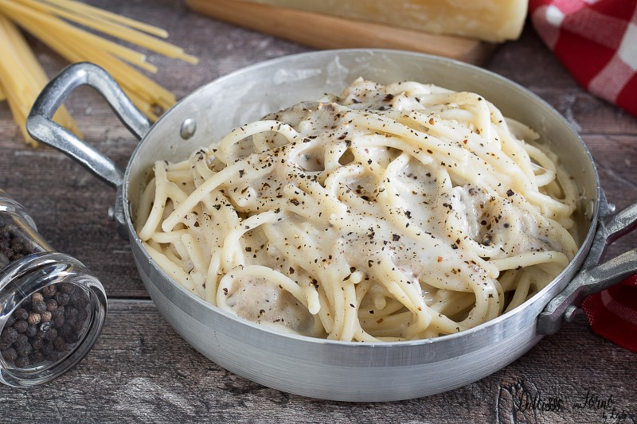

Back home
Pasta Cacio e Pepe

Description:
La Pasta al Cacio e Pepe è un tipico piatto della Tradizione Romana, molto veloce da preparare ed anche poco impegnativo.
Un piatto dal gusto forte, dato dalla sapidità del Pecorino e dal forte aroma del Pepe Nero
Ingredients:
- Pasta
- Pecorino Romano
- Pepe Nero
Steps:
Mettere a bollire una pentola colma di acqua
Quando l'acqua inizia a bollire, salarla e calare la pasta
Aspettare i minuti necessari per la cottura della pasta, girandola di tanto in tanto
Tostare i una padella il pepe nero aggiungendo un mestolo di acqua di cotture
Quando la pasta è al dente, spegnere il fuoco e scolarla nella padella dove è stato tostato il pepe precedentemente
Aggiungere acqua di cottura
Spegnere il fuoco, aspettare 30secondi
Aggiungere il Pecorino Romano e mantecare la pasta per bene
Impiattare ed aggiungere una spolverata di Pecorino e qualche grattata di pepe in superfice
Buon Appetito! <3